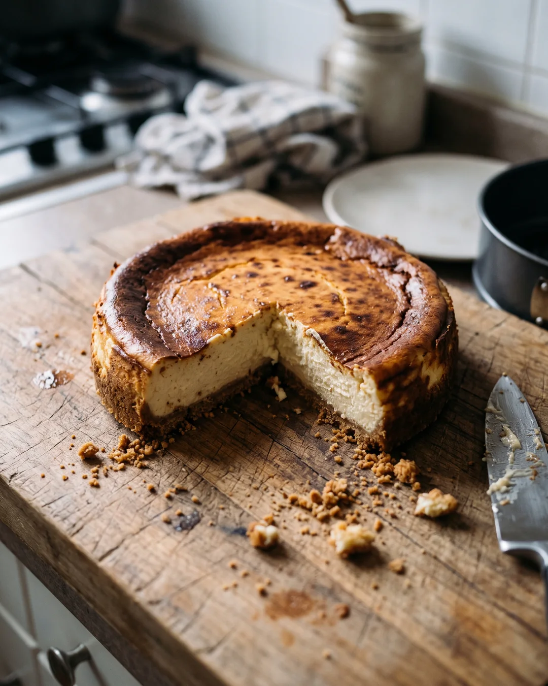

Case #20 · Cakes
About this case
Case #20 is closed. It was the daily case for November 20, 2026 and its theme was Cakes. The detectives of that day had two challenges: five images to judge as real photographs or AI-made pictures, and five one-sentence claims to judge as facts or fakes.
- AI-generated images: 2 of 5
- Fake claims: 3 of 5
Below you will find every answer. Each AI-generated image comes with the prompt that produced it, and each claim with the truth behind it and the details worth remembering, so you can check what you missed.
One of the fakes: “The European Space Agency baked a perfectly spherical sponge cake aboard the ISS.” The truth: The ESA did not bake that cake; in December 2019, astronauts baked the first cookies in space.
Want to sharpen your eye? Read our guide to spotting AI images or our guide to spotting fake news, then play today's case.
Images
-
Image 1

AI
The suspect's confession
An apple tart on the counter of a neighborhood bakery, with the apple slices shiny with syrup and some burnt at the edges; blurred background of other trays.
-
Image 2

REAL
Real photograph
-
Image 3

REAL
Real photograph
-
Image 4

REAL
Real photograph
-
Image 5

AI
The suspect's confession
A freshly cut homemade cheesecake on a wooden board in a kitchen, with a slightly toasted and cracked surface, crumbs on the board and a stained knife beside it; side window light, 50 mm at f/2.8.
Fact or Fake
-
Claim 1
FAKE “The European Space Agency baked a perfectly spherical sponge cake aboard the ISS.”
The ESA did not bake that cake; in December 2019, astronauts baked the first cookies in space.
- They used an experimental zero-gravity oven.
- The oven was made by Nanoracks and Zero G Kitchen.
-
Claim 2
FAKE “A Tokyo pastry shop patented a shiny glaze made with synthetic enzymes in 2025.”
There is no such patent; mirror glaze shines thanks to temperature control and simple ingredients.
- It is made with gelatin, water, sugar, condensed milk and melted chocolate.
- It needs no synthetic enzymes or futuristic technology.
-
Claim 3
FACT “Blowing out birthday candles spreads droplets that raise the bacteria on the frosting by 1,400%.”
A 2017 Clemson University study led by Paul Dawson found that increase compared with a cake nobody blew on.
- Microdroplets of saliva settle on the surface of the cake.
-
Claim 4
FACT “The tallest cake in the world was taller than Christ the Redeemer.”
In 2008, a culinary school in Jakarta, Indonesia, built a 33 m (108 ft) Christmas cake, a Guinness record.
- Christ the Redeemer in Rio is 30 m (98 ft) tall, not counting its pedestal.
- The cake was 3 m (10 ft) taller than the statue.
-
Claim 5
FAKE “Louis XV promised a baker the deed to a small castle in Bordeaux if he could replicate a cake design.”
There is no historical record of such a reward; the castle-for-a-cake story is pure invention.
- French pastry advanced greatly under Louis XV.
- His father-in-law, the exiled Polish king, popularized the rum baba.